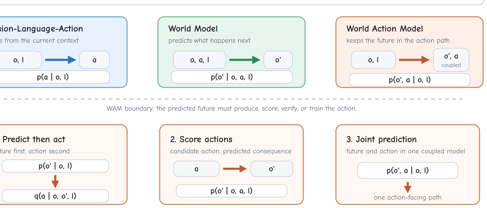
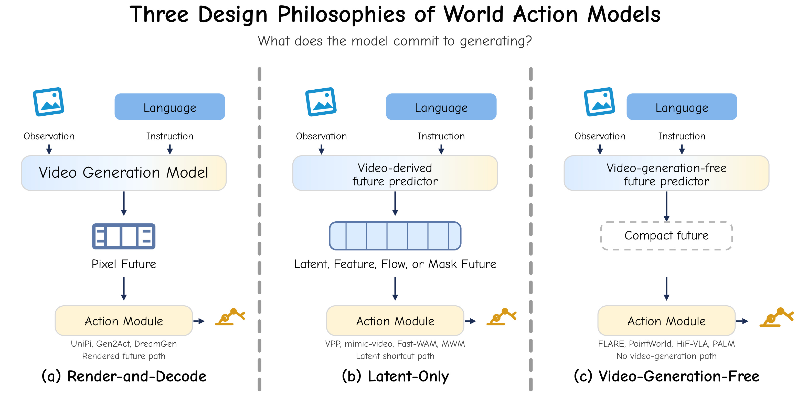
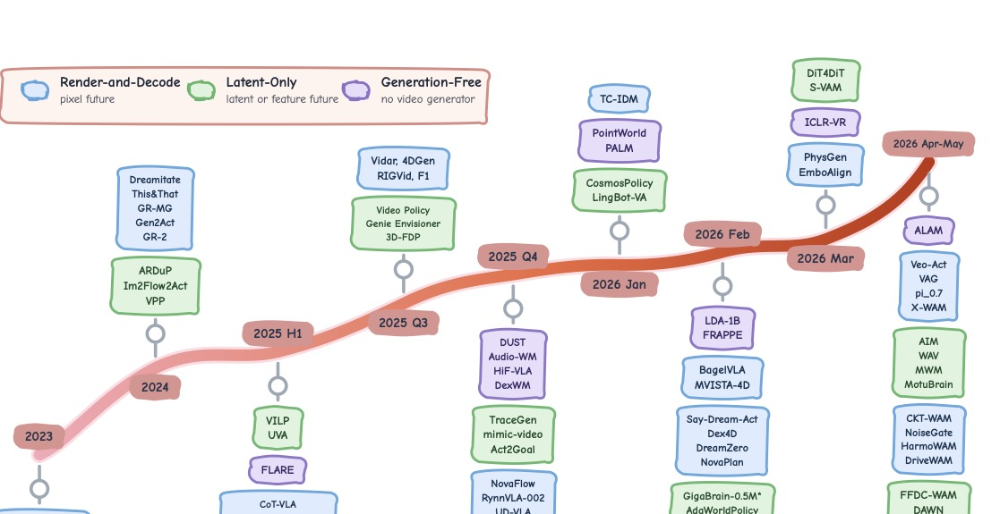
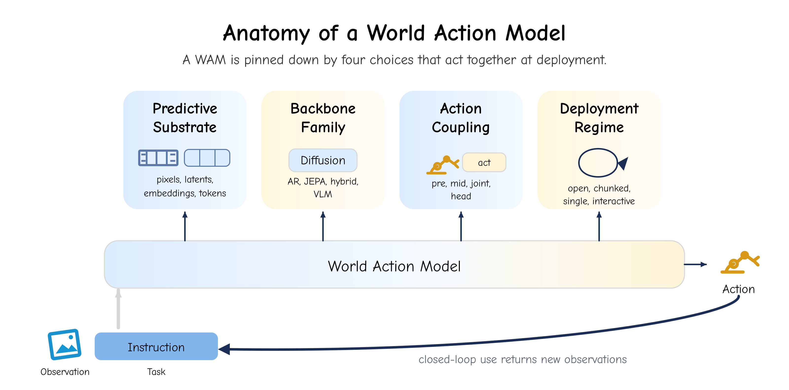
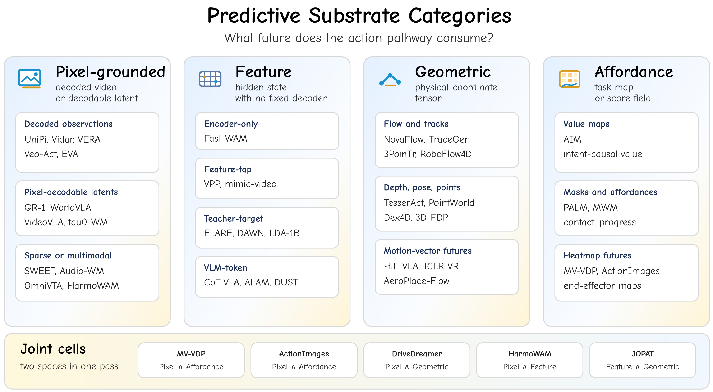
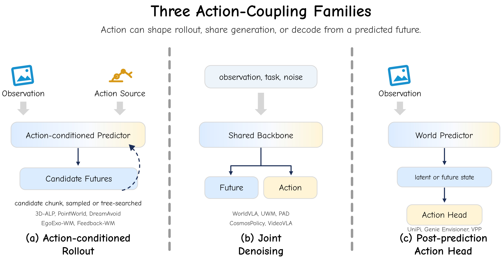

World Action Models: A Survey — 阅读笔记
论文信息 - 作者：Qiuhong Shen, Shihua Zhang, Yue Liao, Qi Li, Zhenxiong Tan, Shizun Wang, Shuicheng Yan, Xinchao Wang† - 通讯作者：Xinchao Wang - 机构：National University of Singapore - arXiv ID：2606.20781 - 项目主页：https://world-action-models.github.io/ - 日期：2026-06
本文基于以下本地材料整理：
- 论文 tex 源码：
arXiv-2606.20781v1/main.tex、arXiv-2606.20781v1/sections/*.tex- 论文图片：
arXiv-2606.20781v1/figures/*.pdf- 本文图片导出目录：
assets/wam-survey/
一、一句话讲清楚
这篇综述给 World Action Models（WAMs）下了统一的定义：WAM 是一种 embodied predictive-action model，它预测未来（predictive），并且把预测的未来用于产生、选择或校验动作（action-facing）。论文的核心贡献不是提出新方法，而是用一套统一的框架（4-tuple 解剖 + 三大设计哲学 + 五大核心属性）把当前几百篇相关工作组织成一张可导航的地图。
传统 VLA：observation → action（不预测未来）
WAM： observation → predicted future → action（预测为动作服务）
关键区分：不是所有预测未来的模型都是 WAM，预测结果必须进入动作路径
二、核心问题：WAM 的边界在哪里？
2.1 五类模型的精确定义
论文第 2 节用损失函数形式化地划清了五个常被混淆的概念的边界：
| 模型类型 | 数学定义 | 关键特点 |
|---|---|---|
| VLA | $\mathcal{L}_{\text{VLA}} = -\log p_\theta(a \mid o, l)$ | 直接从观测映射到动作，不建模未来 |
| World Model | $\mathcal{L}_{\text{WM}} = -\log p_\theta(o' \mid o, a, l)$ | 预测未来观测，但不负责选动作 |
| Video Generation Model | $\mathcal{L}_{\text{VGM}} = -\log p_\theta(o' \mid r)$ | 从 prompt 生成视频，与动作无关 |
| Video World Model | $\mathcal{L}_{\text{VWM}} = -\log p_\theta(o' \mid o, a, l)$ | 动作条件的视频预测器（World Model 的视觉特化） |
| WAM | $\mathcal{L}_{\text{WAM}} = -\log p_\theta(o', a \mid o, l)$ | 预测的未来必须进入动作路径 |
2.2 WAM 的三种实现形式
WAM 可以通过三种方式实现"预测为动作服务"：
形式一：先预测后动作（Cascade）
- 早期代表：UniPi（text→video→inverse dynamics→action）
- 动作模块 $q_\psi$ 可以是 inverse dynamics、pose tracker、trajectory optimizer 等
形式二：先提议动作再看后果（Rollout-Scoring）
- 候选动作先被提出，然后通过预测其后果来打分
- 代表：PointWorld（MPPI + point-flow dynamics）、DreamAvoid（critical-phase scoring）
形式三：联合预测（Joint）
- 未来和动作由一个共享 backbone 同时产出
- 代表：GR-1/GR-2、PAD、UWM、DreamZero、Fast-WAM
关键判决标准：一个直接 VLA 加一个辅助的未来预测 loss、仅用作 RL 环境的 simulator、或在推理时丢弃的未来 head，都不算 WAM。WAM 要求预测的未来在推理时仍然在动作路径上。

图 1：WAM 的定义——从 VLA 到 World Model 再到 WAM 的概念链。该图将三个概念用统一的符号体系（观测 $o$、语言指令 $l$、动作 $a$、未来观测 $o'$）串在一起，展示了"不预测 → 预测但不行动 → 预测为行动服务"的定义递进。
- 直接 VLA：学习 $p(a \mid o, l)$，从当前观测和指令直接映射到动作，不含对未来观测的预测。RT-2、OpenVLA 等是典型代表。它是 WAM 的"近邻"——绑定了视觉、语言和动作，但缺少对未来状态的建模。
- World Model：学习 $p(o' \mid o, a, l)$，预测未来观测 $o'$，但不负责选择动作。$o'$ 在后续章节被细化为不同预测基板（像素/特征/几何/affordance）。
- WAM：预测的未来必须进入动作路径——帮助"产生、选择或校验"动作。图中展示三种实现方式：Cascade（先预测 $o'$ 再用独立模块 $q_\psi$ 解码动作，如 UniPi 的 video→inverse dynamics）、Rollout-Scoring（先提议动作再用预测后果评分，如 PointWorld）、Joint（未来和动作由共享 backbone 同时产出，如 GR-1/GR-2）。
论文给出了明确的判决标准：直接 VLA 加辅助预测 loss、仅用作 RL 环境的 simulator、或推理时丢弃的未来 head，都不算 WAM。这个定义是整个综述的地基。
三、三大设计哲学
论文第 3 节从"动作在推理路径上的哪个位置被解码"这个视角，将所有 WAM 分为三个互斥的哲学阵营。分类标准是推理时（或动作监督时）最后需要的未来表征形式。

图 2：三大设计哲学——用三条推理数据流展示"动作在推理路径的哪个位置被解码"。分类标准是推理时（或动作监督时）最后需要的未来表征形式，三栏互斥且穷尽了当前 WAM 的全部形态。
- Render-and-Decode（左）：视频生成 backbone 跑到像素输出，然后动作从渲染的未来中解码。动作模块可与生成器联合训练（GR-1/GR-2）、单独训练（UniPi）或由 tracking/optimization 提供（AVDC）。这是最直观的路径——"先完整想象未来，再决定怎么做"。代价是像素合成成为延迟的一部分，而大多数动作决策不需要消费全部渲染细节。
- Latent-Only（中）：保留视频 backbone 的训练先验，但推理时在像素解码前截停——动作从中间 latent、去噪特征、光流场、语义 mask 或 value map 中直接解码。关键设计是：视频 pretraining 提供动力学先验，但 inference 不付像素生成的钱。代表包括 VPP（SVD 中间特征→inverse dynamics）、Fast-WAM（训练时联合视频-动作，推理时关闭视频分支）、UWM（独立去噪步数折叠视觉分支）。
- Video-Generation-Free（右）：完全不用视频生成 backbone。预测组件在 LLM/VLM/JEPA/DINO 特征回归器的嵌入或 token 空间中产生未来表征。代表包括 FLARE（策略 token 对齐 frozen teacher embedding）、LDA-1B（DINO latent 空间联合学习）、PointWorld（Point Transformer + MPPI）。
这个分类与 cascade/joint 区分是正交的——Latent-Only 可以是 cascade 也可以是 joint，Render-and-Decode 同理。训练 pipeline 无法区分哲学归属，只有推理数据流能暴露这个设计选择。

图 3：WAM 时间线——按三大设计哲学分组的代表性工作年代学流。横轴从 2023 延伸到 2026 年 5 月，时间 bin 前期较粗（2023、2024、2025 上半年）后期加密（2025 下半年至 2026 年 5 月）。每个时间标记将工作名以紧凑的垂直栈附着在曲线上，交替排列于曲线上下方以避免标签重叠。密集期保留早期或中心的代表性 WAM，确保标签可读。
该图补充了静态分类缺失的年代学维度。三条流按哲学分组，论文正文总结了各阶段的核心特征：
- 2023–2024 上半年：仅 Render-and-Decode 出现。WAM 几乎等同于"生成视觉未来 → 解码动作"。UniPi 建立"视频即计划"模板，GR-1 开启联合自回归帧-动作预测。
- 2024 下半年–2025 上半年：Latent-Only 兴起。VPP、UWM、Genie Envisioner 等开始把动作解码移到像素渲染之前——关键发现是动作需要的未来信息可以在更早的层提取。Render-and-Decode 同期继续扩张（PAD、WorldVLA、DreamZero）。
- 2025 下半年–2026 年 5 月：Video-Generation-Free 出现（FLARE、DUST、LDA-1B 等）。三线交汇、密度急剧增加。应用领域从桌面操作扩展到灵巧手、触觉交互、自动驾驶和空中操作——不同延迟要求和观测体制实例化了同样的三种哲学。
曲线从单线到三线并行的演变直接反映了领域从"渲染未来"到"保留未来结构"的历史转向——"Dream Less, Act More"。
3.1 Render-and-Decode（渲染-解码型）
定义：把视频生成 backbone 跑到像素输出，然后从渲染的未来中解码动作。
核心前提：渲染的未来值得在推理时产生，因为它保留了视频 backbone 学到的完整视觉先验（外观、运动、接触、场景动力学）。
代价：视觉合成成为策略延迟预算的一部分。
代表作演进路线：
| 阶段 | 代表工作 | 核心思路 |
|---|---|---|
| 奠基 | UniPi | text→video→inverse dynamics，建立"视频即计划"模板 |
| 扩展 | AVDC, Dreamitate, Gen2Act | 用密集对应、生成的人手视频替代动作标签 |
| 模块化分离 | DreamGen, RIGVid, VERA | 世界模型与动作恢复分开训练，可跨 embodiment 复用 |
| 几何中间层 | NovaFlow, Dream2Flow, 3D-ALP | 从生成视频中提取 3D flow/pose，再做控制 |
| 联合生成 | GR-1, GR-2, PAD, WorldVLA | 动作预测进入视频 backbone 内部，不再外挂 decoder |
| 稀疏未来 | RoboEnvision, CoT-VLA, π₀.₇, SWEET | 只渲染关键帧/子目标，不全量生成视频 |
| Foundation 级 | DreamZero, Say-Dream-Act, Vidar, Veo-Act | 大视频 backbone 进入闭环控制 |
核心局限：每个预测步都要付完整去噪/自回归的代价，而 actor 很少消费全部渲染输出。视频质量指标与下游任务成功率弱相关。
3.2 Latent-Only（纯隐式型）
定义：保留视频世界模型的训练先验，但推理时在像素解码之前截停——动作从中间 latent、去噪特征、光流场、语义 mask 或 value map 中解码。
动机：保留视频学到的时序和物理结构，同时降低推理成本。
关键设计选择：在哪里截断预测路径？
| 截断点 | 代表工作 | 核心思路 |
|---|---|---|
| 视频 latent 中间状态 | ARDuP, VPP, VILP | 从 video diffusion 中间层解码动作 |
| 去噪轨迹早期检查点 | mimic-video, DiT4DiT, S-VAM | 从去噪中间步（而非最终步）解码动作 |
| 结构化运动预测 | Im2Flow2Act, 3DFlowAction, TraceGen | 先预测 flow/trace，再解码动作 |
| 联合训练+推理时跳过 | UWM, Fast-WAM, GigaWorld-Policy | 训练时联合视频-动作，推理时关闭视频分支 |
| 跨模态 latent | OmniVTA, VTAM, CLWM | 触觉 latent、特征 latent 同样适用 |
核心权衡：保留了视频预训练的动力学先验，但失去了直接的视觉可解释性。
3.3 Video-Generation-Free（无视频生成型）
定义：完全不用视频生成 backbone。预测组件在 LLM/VLM/JEPA/DINO 特征回归器/非视频扩散 backbone 的嵌入或 token 空间中产生未来表征。
动机：避免视频生成的训练和推理成本，同时在更紧凑的表征空间中保留预测监督。
四类实现路径：
| 路径 | 代表工作 | 核心思路 |
|---|---|---|
| 特征预测 | FLARE, FRAPPE, LDA-1B | 用 frozen teacher/VFM embedding 作为未来预测 target |
| 学习 token/隐式转移 | DUST, ALAM | 在 VLM 的 token 空间中预测未来 |
| 结构化非像素未来 | PointWorld, PALM, HiF-VLA | 预测 3D 点流、affordance map、运动矢量等几何/任务结构 |
| 跨模态 | Audio-WM | 预测未来声音的 Mel latent，用于接触声学丰富的任务 |
四、WAM 的四轴解剖
论文第 4 节将每个 WAM 视为同一个数学对象的不同实现：
四个设计轴分别是：

图 4：WAM 的四轴解剖——该综述最核心的组织框架。论文将所有 WAM 统一为同一个数学对象 $p_\Theta(s_{t+1:t+H}, a_{t:t+H-1} \mid o_{\le t}, a_{<t}, l)$，四个轴对这个对象的不同实现选择进行分解。Census 表（Table 1 和 Table 2）将每篇 WAM 记录为这四轴上的 4-tuple。
- 预测基板（Predictive Substrate, §4.2）— 预测什么：未来用什么形式呈现给动作？四类从具体到抽象：Pixel-grounded（可解码为观测的像素/VAE/VQ latent）→ Feature（学习的 hidden state/teacher embedding/VLM token block，无固定视觉 decoder）→ Geometric（光流/点轨迹/深度/pose/运动矢量，维数为物理坐标）→ Affordance（value map/contact mask/heatmap，维数为任务标签）。基板越具体，可视化越好但生成成本越高；越抽象，预测越便宜但可检查性越差。
- 动作耦合（Action Coupling, §4.3）— 动作如何介入：动作如何进入和离开模型？三种顶层分解：Action-Conditioned Rollout（$q_\psi$ 先提议动作 → $p_\theta$ 预测后果，支持反事实评分）→ Joint Generation（$p_\theta$ 一次前向同时产出基板和动作，$\mathcal{L}_\text{joint} = \mathcal{L}_\text{gen} + \lambda\mathcal{L}_\text{act}$）→ Post-Prediction Head（$p_\theta$ 先生成基板 → $q_\psi$ 后解码动作，$q_\psi$ 可单独训练/跨 embodiment 替换）。
- 架构 Backbone（Architectural Backbone, §4.4）— 怎么预测：用什么函数族实现预测？五大 backbone：Iterative Denoising（扩散/流匹配多步去噪）→ Autoregressive（因果逐元素+KV-cache）→ JEPA（EMA teacher 特征空间 MSE，单次前向）→ Hybrid（共享 trunk 多头输出）→ LLM/VLM-backbone（语言模型做预测载体）。
- 部署模式（Deployment Regime, §4.5）— 多快调一次：WAM 以什么频率和窗口被调用？开环 Rollout（$H \approx T$，调用一次）→ 分块闭环（$H = K$，摊销 backbone 成本）→ 单步闭环（$H = 1$，最高反应性）→ 交互式模拟（KV-cache 跨调用携带状态）。
四个轴在实践中强关联：越抽象基板越倾向单步闭环，越像素级越需要分块闭环。基板和 backbone 训练时固定，部署和部分耦合可在推理时调整。
4.1 轴一：预测基板（Predictive Substrate）
$s_{t+1:t+H}$ 生活在哪里？ 这是"未来用什么形式呈现给动作"的问题。

图 5：预测基板阶梯——四类基板从"像素级具体"到"任务级抽象"阶梯排列，每层列出代表性 WAM。分类判据是"WAM 在哪个表征空间中形成其未来假设"，联合案例用 ∧ 分隔（一次前向预测两类基板）。
- Pixel-Grounded（像素基板，最上层）：未来以可解码为观测的形式存在。包括 decoded observations（完全渲染的 RGB/RGB-D/多视角视频，如 UniPi）和 pixel-decodable latents（VAE/VQ latent 有固定 decoder，如 PAD、WorldVLA、τ₀-WM）。Audio-WM（预测未来 Mel latent）作为声音观测 latent 边缘案例标注。优点是视觉可检查、保留完整外观先验；代价是每步都要付去噪/自回归成本。
- Feature（特征基板）：未来以学习的特征状态存在，无固定视觉 decoder。包括 encoder-only/feature-tap（从视频 trunk 中间状态解码动作，推理时 skip 渲染，如 Fast-WAM/GigaWorld-Policy/VPP）、teacher-target（对齐 frozen vision encoder 的未来 embedding，如 FLARE/FRAPPE/LDA-1B）、VLM-token（未来在 VLM vocab 中表示为 token 块，如 CoT-VLA/DUST/ALAM）。优点紧凑、语义不变性强；缺点无直接视觉质量指标。
- Geometric（几何基板）：未来以物理坐标的维度存在。包括 flow & point motion（光流/3D 物体流/点轨迹，如 Im2Flow2Act/NovaFlow/3PoinTr）、structured physical futures（4D 点云/MPEG-4 运动矢量/gripper polyline，如 TesserAct/HiF-VLA/ICLR-VR）、joint pixel-geometric（∧ 联合案例，如 DriveDreamer-Policy 的 depth+video+action 和 JOPAT 的 pixel+point track+visibility）。优点是更接近控制接口、成本远低于像素；缺点是丢失外观语义。
- Affordance（affordance 基板，最底层）：未来以任务相关的标签或分数图存在。包括 value maps（AIM，意图因果注意力强制动作通过 value 表征）、semantic masks（MWM，预测语义 mask 动力学而非 RGB）、affordance maps（PALM，同时预测 object masks/contact likelihood/placement candidates/motion regions）、heatmaps（ActionImages/MV-VDP 的端部执行器热力图）。优点是最紧凑、直接任务相关；缺点是需要任务特定标注。
从上到下，每向下一步就丢掉控制器不需要的外观信息，迫使容量流向对控制最重要的几何、接触和动力学。Fast-WAM（特征+encoder-only）和 τ₀-WM（像素+joint-denoising）可能在相同 backbone 上运行，但基板选择彻底改变了推理成本和可解释性——这正是基板、耦合、backbone 被定义为独立轴的原因。
| 基板类别 | 形式 | 代表工作 | 优点 | 缺点 |
|---|---|---|---|---|
| 像素基板 | RGB/RGB-D/多视角视频 或 VAE/VQ latent（有固定 decoder） | UniPi, GR-1, PAD, WorldVLA | 可检查、保留外观先验 | 生成成本高、大量细节动作不需要 |
| 特征基板 | 学习的 hidden state / teacher embedding / VLM token block（无固定视觉 decoder） | Fast-WAM, FLARE, LDA-1B, VPP | 紧凑、语义不变性强 | 无直接视觉质量指标 |
| 几何基板 | 光流/点轨迹/深度/pose/运动矢量/polyline | Im2Flow2Act, PointWorld, TesserAct, HiF-VLA | 更接近控制接口、成本低 | 丢失外观语义 |
| Affordance 基板 | value map/contact map/semantic mask/heatmap | AIM, PALM, MWM | 直接任务相关、紧凑 | 需任务特定标注 |
关键区分：基板和耦合是独立的轴。Fast-WAM 是特征基板 + encoder-only；τ₀-WM 是像素基板 + joint-denoising。两者可以自由组合。
4.2 轴二：动作耦合（Action Coupling）
动作如何进入和离开模型？ 三种顶层分解：

图 6：三种动作耦合模式——动作如何进入和离开预测过程。耦合是将预测世界模型转变为 WAM 的结构性决策，三种排列在延迟、可控性和每步推理成本上有本质区别。论文正文说明该图在第一种排列内展示了 $q_\psi$ 的代表性候选形式。
- (a) Action-Conditioned Rollout：动作先被提议，世界模型预测后果。数学上 $q_\psi(a \mid c) \, p_\theta(s \mid c, a)$。分为 chunk-level（一次固定整个 chunk 做条件）和 step-wise（每步交替动作选择和预测）两种 submode。图中展示了 $q_\psi$ 的四类实现：确定性规划器/MPC（如 PointWorld 的 MPPI + 点流评分）、随机策略采样（DreamAvoid 的 flow-policy 采样）、树搜索（3D-ALP 的 MCTS）、反馈引导去噪（Feedback-WM 的 latent transition model 纠正扩散策略）。核心能力是反事实推理——多个候选动作并行评分选最优。chunk-level 可并行但不能中途反应，step-wise 反之。
- (b) Joint Generation：基板和动作由同一个生成过程同时产出——$p_\theta(s, a \mid c)$。训练目标 $\mathcal{L}_\text{joint} = \mathcal{L}_\text{gen}(s) + \lambda\mathcal{L}_\text{act}(a)$，通常共享 backbone 加两个输出头。代表包括 UWM（视频-动作共享 denoising）、PAD（图像-动作 DiT）、GR-1/GR-2（自回归帧-动作 token）、DreamZero/Motus。优势是单次采样产出一致性强的基板+动作对。挑战是生成 loss 和动作 loss 可能冲突，因此通常先预训练基板头（video-only），再引入动作头并配合 λ 调度。
- (c) Post-Prediction Head：基板先生成，动作专家后解码——$p_\theta(s \mid c) \, q_\psi(a \mid s, c)$。$p_\theta$ 通常冻结，$q_\psi$ 较小、可跨 embodiment 替换。代表包括 UniPi（video→inverse dynamics）、CoT-VLA（visual CoT tokens→action）、FLARE（predicted future embedding→action expert）。优势是模块化——预训练预测器可冻结复用。风险是 $q_\psi$ 的可靠性完全取决于基板是否保留了动作相关信息——这从设计层面解释了 Latent-Only 和 Video-Generation-Free 为什么在实践中越来越受欢迎。
模式 1：动作条件的 Rollout（Action-Conditioned Rollout）
- 动作先被提出（planner/policy/sampler），世界模型预测后果
- 支持反事实推理：多个候选动作并行评分
- 代表：PointWorld（MPPI + point-flow）、DreamAvoid（critical-phase 评分）、3D-ALP（MCTS + 3D 渲染 oracle）
模式 2：联合生成（Joint Generation）
- 基板和动作由同一个生成过程产生
- 训练目标：$\mathcal{L}_\text{joint} = \mathcal{L}_\text{gen}(s) + \lambda \cdot \mathcal{L}_\text{act}(a)$
- 代表：UWM, PAD, VideoVLA, GR-1, Motus, DreamZero
- 优点：单次采样产生基板+动作，两者一致性强
- 缺点：生成 loss 和动作 loss 可能冲突，需要仔细的 λ 调度
模式 3：预测后动作头（Post-Prediction Head）
- 基板先生成，动作专家后解码
- $q_\psi$ 通常较小，可单独训练，可跨 embodiment 替换
- 代表：UniPi（video→inverse dynamics→action）、CoT-VLA、FLARE、mimic-video
- 优势：预训练预测器可冻结复用
- 风险：如果基板不保留动作相关信息，$q_\psi$ 不可靠
动作表示：连续控制（$\mathbb{R}^{d_a}$）、离散 token（codebook binning）、学习 latent action（$\mathbb{R}^{d_z}, d_z \ll d_a$）。
Chunk size：单步动作（低延迟但高调用频率）vs 长 chunk（摊销 backbone 成本但无法中途反应）。
4.3 轴三：架构 backbone（Architectural Backbone）
用什么函数族实现预测？ 五大 backbone 家族：
| Backbone 家族 | 核心参数化 | 典型训练目标 | 代表 WAM |
|---|---|---|---|
| 迭代去噪（Video Diffusion） | $p_\theta(s \mid c) = \int p(s^{(N)})\prod p_\theta(s^{(n-1)} \mid s^{(n)}, c)$ | Score-matching / Flow-matching | UniPi, PAD, VideoVLA, CosmosPolicy |
| 自回归（Autoregressive） | $p_\theta(y_{1:M} \mid c) = \prod_j p_\theta(y_j \mid y_{<j}, c)$ | 下一元素 CE / regression | GR-1, GR-2, WorldVLA, PhysGen |
| 联合嵌入预测（JEPA） | $s = f_\theta^\text{pred}(\mathbf{E}^\text{ctx}(x_\text{ctx}))$，target 来自 EMA encoder | 特征空间 MSE | FLARE, DAWN, V-JEPA~2 |
| 混合型（Hybrid） | $g_\theta(c) \to \{h_\theta^s, h_\theta^a\}$，共享 trunk 多头输出 | $\mathcal{L}_\text{gen} + \lambda \mathcal{L}_\text{act}$ | UVA, Motus, F1, X-WAM, DriveWAM |
| LLM/VLM-backbone | VLM forward → future token block → $q_\psi$ 解码动作 | VLM 的 next-token + 动作 loss | π₀.₇, CoT-VLA, LDA-1B, PALM |
重要澄清：自回归是 backbone 参数化，不等于 joint action prediction。很多自回归 WAM 的流只预测基板，动作由外部 $q_\psi$ 解码。
4.4 轴四：部署模式（Deployment Regime）
WAM 以什么频率、什么窗口被调用？
| 模式 | 公式 | 特点 | 代表 |
|---|---|---|---|
| 开环 rollout | $H \approx T$，调用一次 | 成本一次性支付，无法反应偏差 | UniPi, AVDC, RoboEnvision |
| 分块闭环 | $H = K$，每 $K$ 步重规划一次 | 摊销大 backbone 成本，实时可行 | π₀.₇, CoT-VLA, Motus, DreamZero |
| 单步闭环 | $H = 1$，每控制步调用 | 最高反应性，每步成本最高 | WorldVLA, GR-1, PAD |
| 交互式模拟 | 无限 horizon，跨调用携带状态（KV-cache/persistent latent） | 最灵活，但需要因果一致性 | DreamZero（KV-cache 重接地） |
五、五大核心属性
论文第 5 节讨论 WAM 一旦进入控制回路后必须满足的五个属性。它们不是检查清单，而是一组相互竞争的约束。
5.1 可交互性（Interactability）
WAM 必须在生成过程中接受控制信号，而不是只在生成完后才解码动作。
动作绑定时机是一个从"生成后解码"到"生成中控制"的谱系：
Post-prediction decoding In-generation control
（生成完后解码） ─────────────────────→ （生成中控制）
UniPi, AVDC CoVAR, UWM, AdaWorld
最便宜、最模块化 预测的未来真正被动作塑造
瓶颈化动作通路是极端形式——AIM 把未来暴露为 spatial value map、GigaWorld-Policy 让动作成为主要预测目标。通道越窄，推理越便宜，但动作能利用的未来信息也越少。
5.2 因果性（Causality）
未来的信息不能泄漏到当前执行的动作中。
三种实现手段：
- 因果 token 流（GR-1/GR-2/PhysGen/WorldVLA）：因果 masking + KV-cache，预测下一个元素时只看过去
- 无泄漏去噪（WorldVLA/CoT-VLA/UD-VLA）：chunk 内 action token 不能 attend 到 future-pixel token
- 动作优先推理（mimic-video/S-VAM/Fast-WAM）：控制器通常更需要下一个动作而非完整精修的未来视频——中间 ODE 检查点、单次前向传播就够了
关键操作：用因果结构同时解决两个问题——阻止未来信息泄漏 + 把计算花在能改变下一个决策的预测部分。
5.3 持续性（Persistence）
在反复动作-观测-重规划下保持状态一致。
三种失败模式及应对：
| 失败模式 | 原因 | 应对机制 | 代表 |
|---|---|---|---|
| 漂移 | 预测误差逐步累积 | 观测替换：用实测替换预测，更新 cache | DreamZero（KV-cache 重接地） |
| 成本增长 | 注意完整历史的复杂度上升 | 有界记忆：固定预算内的上下文管理 | DexWM（bounded test-time memory） |
| 遗忘 | 有限上下文丢弃场景身份 | 多尺度时序哈希 | Act2Goal（近稠密远稀疏） |
5.4 物理合理性（Physical Plausibility）
预测的未来必须能被 embodiment 实际执行，而不只是看起来逼真。
三层物理约束阶梯：
最上层：全 RGB → 下一阶梯：RGB-D/Normal/4D 点云 → 再往下：光流/3D 物体流
→ 更底层：语义 mask → 最底层：完全不渲染（特征空间/affordance）
每往下一层，就丢掉控制器不需要的外观信息，迫使容量流向几何、接触和动力学。
其他物理通道：
- 触觉预测：OmniVTA 预测触觉接触状态，快慢双通道控制
- 力预测：AdaWorldPolicy 加力预测分支，用力-力矩失配做在线适应
- 运动学一致性：PAD/GR-1/CosmosPolicy 用本体感知条件化预测；DexWM 加手部一致性 loss
5.5 泛化性（Generalization）
WAM 的泛化比 VLA 更严格——因为预测基板和动作通路都必须经受住分布偏移。
三种泛化路径：
| 路径 | 转移什么 | 代表 | 局限 |
|---|---|---|---|
| 视频先验迁移 | 大规模视频预训练 → 动作微调 | GR-2, VideoVLA, DreamZero | 需要 inverse model/subgoal generator 连接 |
| 基板迁移 | 把未来换成不携带外观信息的表征（flow/mask/feature） | Im2Flow2Act, MWM, FRAPPE | 难以用视频指标评估 |
| 动作抽象迁移 | 分离基板（承载任务动态）和动作解码器（承载 embodiment 特定运动学） | LDA-1B, DUST, ALAM | 抽象动作仍需 decoder/calibration |
核心原则：在仍然能约束控制的最高不变性层面预测。没有一种设计对所有偏移都最优。
六、数据与评估
6.1 数据来源
五种数据来源，每种在规模-标签质量-物理真实性之间提供不同的折中：
| 数据源 | 特点 | 代表 |
|---|---|---|
| 机器人遥操作 | 最精确的动作标签，消耗机器人/操作员时间 | OXE, RoboMIND, RoboSet |
| 便携人类演示 | 高通量，有 embodiment gap | EgoMimic, EgoDex, EgoVerse |
| 互联网自我中心视频 | 最大规模，缺少动作通道 | Ego4D, EPIC-KITCHENS, EgoScale |
| 仿真 | 精确标签+可控课程，有 sim-to-real gap | LIBERO, RoboTwin, ManiSkill |
| WAM 自身生成 | 神经轨迹填补物理采集空白，继承生成器失败模式 | DreamGen, IRASim |
6.2 评估
三个层次且尚未完全统一：
- 视觉保真度指标（FVD, FID, LPIPS, PSNR, SSIM）：便宜但与下游任务成功率弱相关
- 闭环基准（LIBERO, RoboTwin, ManiSkill, 真机测试）：更可信但每轮消耗 robot/simulator
- 物理合理性和长程一致性：尚无标准指标——触觉误差、运动学一致性检查仍在早期
核心矛盾：WAM 越适合真实使用，越难评估——分块/交互式闭环控制需要更长 horizon、更严延迟约束和真实环境变化。
七、开放挑战
论文第 7 节提出了七个开放问题：
7.1 多想还是多做？（Dream More or Act More?）
核心张力：更丰富的未来（更大的 backbone、更深的去噪）改善动作基板，但增加观测到控制的延迟。
当前方法的两种选择：
- 少想多做：S-VAM（蒸馏去噪特征）、Fast-WAM（推理时关闭视频分支）、GigaWorld-Policy（mask 掉未来视频 token）
- 多想少做：DreamZero（优化栈把大视频 backbone 带入闭环）、CosmosPolicy（重复 model+value 查询规划）
开放问题：暴露一个可控的 fidelity-latency 曲线，让 WAM 根据状态选择用多少未来信息。更进一步，使这成为运行时的自适应决策——接触敏感状态多花未来预算，常规运动中少花。
7.2 每个阶段该学什么数据？
WAM 需要视觉动态、embodiment 对齐、可执行动作、后训练调度器——这些不应从同一数据源学习。
- pretraining 阶段：什么样的视频能教后面动作路径需要的动态？（VidMan：机器人域视频有帮助，不匹配的自我中心视频可能有害）
- 对齐阶段：自我中心人类数据、配对人-机器人演示、可穿戴设备——哪种偏差最小？
- 动作阶段：action-free 方法（LAPA, DUST, ALAM）减少对标注的依赖，但不能完全消除
缺失的关键结果：数据源 × 阶段 × 质量 × 模型大小 × 动作接地的联合 scaling law。
7.3 记忆能跟上吗？
- 自回归预测有漂移问题（IRASim, PhysGen）
- 有界测试时记忆有遗忘风险（CLWM）
- 紧凑 latent state 在长操作 episode 中丢失物体级空间细节（Dreamer 4）
开放问题：将 bounded memory、spatial indexing 和 observation replacement 组合成一个在长任务中保持反应性的方法。
7.4 WAM 如何泛化？
- Domain randomization 仍是硬测试：Act2Goal 在强随机条件下骤降，FRAPPE 也远低于实用率
- Video prior 帮助泛化，但不解决形态学偏移（DreamZero 仍需适应）
- 正信号：EgoScale 展示了灵巧预训练量的清晰 scaling law
开放问题：在训练前为声明的偏移做设计，然后测试基板和动作解码器是否跨该偏移泛化。
7.5 什么让抽象动作接地？
- 2D 物体流无法表示深度平移/面外旋转/接触力
- Point-track 和 flow 适配器继承 tracker/depth estimator 的误差
- 学习 latent action 在精细抓取时困难（LAPA）
- 代数一致性是有用的规律，但不是力/力矩/接触的解释（ALAM）
开放问题：保留抽象动作的数据优势，同时加入物理接地信号和用于失败分析的可检查 handle。
7.6 什么样的未来是物理的？
- 单帧条件的 flow 世界模型无法编码物体速度（FlowDreamer）
- 触觉力代理未校准（VTAM）
- 执行性 reward 如果只评分平滑度和关节限制会遗漏接触（EVA）
部分方法指向更好标准：RoboScape 加几何一致性约束、OmniVTA/DexWM 加入触觉/灵巧状态、AdaWorldPolicy 在训练目标中包含动作条件的未来结构。
7.7 评估应该报告什么？
- 世界模型质量与下游策略效用仅弱相关（MotuBrain）
- 平均成功率隐藏相反模式（HarmoWAM：转运有用的调度在精确交互时失败）
- 延迟通常与准确率分开报告
理想协议："accuracy-at-budget"——把成功率、延迟、持续 horizon、峰值内存和接触敏感失败标签放在同一轴上。
八、核心贡献总结
-
统一定义：给出了 WAM 的精确定义——预测的未来必须进入动作路径（cascade / rollout-scoring / joint prediction），排除了不满足该标准的直接 VLA 和纯世界模型。
-
双重分类体系：
- 哲学层面：Render-and-Decode / Latent-Only / Video-Generation-Free（按"动作在哪里被解码"分类）
- 组件层面：Substrate × Backbone × Coupling × Deployment（4-tuple 统一表示）
-
五大核心属性：Interactability / Causality / Persistence / Physical Plausibility / Generalization——不是检查清单，而是一组相互竞争的约束。
-
统一观察：整个领域的演进方向不是"生成更多未来"，而是"生成更少但更精准的未来"——只保留控制需要的那部分。
九、关键概念速查
| 概念 | 说明 |
|---|---|
| WAM | World Action Model — 预测未来并把预测用于动作的 embodied model |
| Render-and-Decode | 视频 backbone 跑到像素输出，再解码动作 |
| Latent-Only | 保留视频 backbone 训练先验，推理时在像素解码前截停 |
| Video-Generation-Free | 完全不用视频生成 backbone，未来在 token/feature/geometry 空间中 |
| Predictive Substrate | 未来用什么形式呈现给动作（像素/特征/几何/affordance） |
| Action Coupling | 动作如何进入和离开模型（rollout/joint/head） |
| Deployment Regime | WAM 被调用的频率和窗口（开环/分块闭环/单步闭环） |
| Interactability | 控制信号能在生成过程中塑造未来，而非只在生成后解码 |
| Causality | 未来信息不能泄漏到当前执行的动作中 |
| Persistence | 反复动作-观测-重规划下保持长程状态一致 |
| Physical Plausibility | 预测的未来能被 embodiment 实际执行，不只看视觉逼真 |
十、Takeaway
这篇综述的核心信息是：WAM 不是"视频生成器 + 动作头"，而是一类设计选择在"表征丰富性 vs 计算/内存/延迟"之间做权衡的预测-动作方法。领域正在朝着"生成更少的未来，但保留控制所需的那部分"的方向演进。
理解 WAM 的正确方式不是记住每篇论文的名字，而是通过 4-tuple（基板 × backbone × 耦合 × 部署）来定位任何新方法，通过五大属性来衡量它的实际表现，通过数据-评估的 trade-off 来判断它的实用价值。